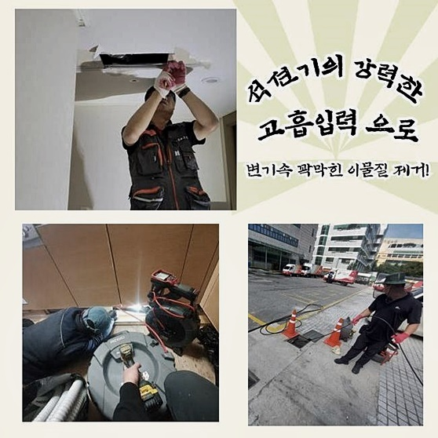
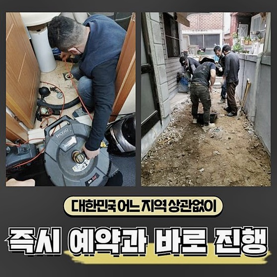
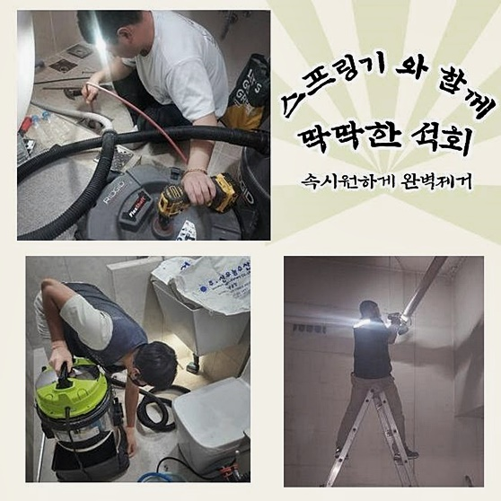
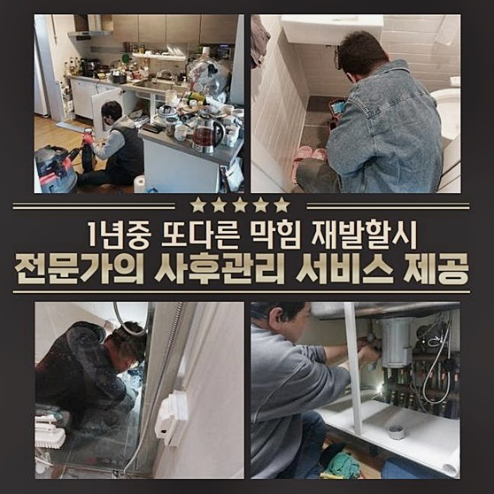
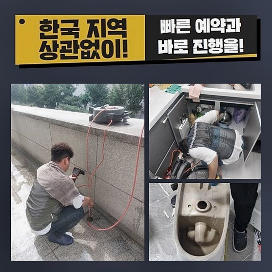
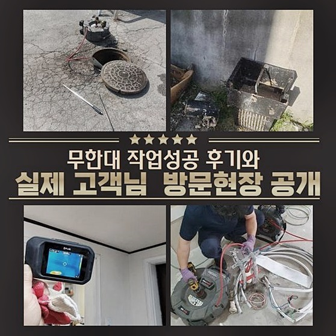
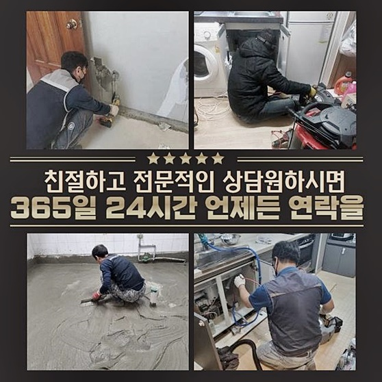

🏠 안성 금석동화장실하수구막힘 죽산면 악취차단 해결방법
안성 싱크대막힘 전문 시공 후기

📋 작업 개요
- 위치: 안성
- 서비스 유형: 싱크대막힘, 하수구막힘, 배관막힘, 역류해결, 배관청소, 고압세척, 악취차단
- 작업 일시: 2024. 6. 11. 9:11
- 업체명: 하수구수사대 (010-5615-2118)
🔍 문제 상황
안성 금석동화장실하수구막힘 죽산면 악취차단 해결방법
삶을 영위하기위해 물들을 쓰려면 필수적으로 사용된 수도가 빠질수있는 배수시설들과 통로역할을 하는 하수도가 필요하죠
하수구는 가정을 떠나서 하수를 배출시켜야할 장소인 공장이나 농장등에서도 동일하다고 여겨지죠
그렇기에 배수장애는 한정적인 데에서가 아닌 어디에서든지 생기죠
얼마전 저희의 전문진이 방문드린 의뢰자는 거주하고계신곳이 아니었고 영업점의 배관에 문제가생겼다고 저녁시간대에 난처한 상황을 설명하며 의뢰하셨어요
운영에있어서 차질을 빚은 상황으로 저희들은 빨리 막힘을 해결하도록 매장으로 찾아뵈었습니다
고객분이 의뢰하실때 말씀해주신대로 조리공간에서 수도를 이용할 때 하단의 하수구에서 솟구치는 참사가 벌어진것이죠
이런 상황에선 개수대가 아닌 상가 배수시설들과 연결된 하수배관들이 막힘문제를 일으켜 아랫부분에 자리한 트렌치로 뿜어져나오고 말았는데요
이러한 증상들을 해결시켜주기위해 선제적으로 시작한건 석션도구를 사용하여 하수관에 부유하는 이물을 우선적으로 처리해줍니다
셕션이라 함은 고착이 안된 이물들을 흡입해 걷어내는 기능을 맡고있죠

🔎 원인 분석
💡 전문가 진단: 정밀 진단 장비를 사용하여 슬러지의 고착 여부를 판명하고 타격/세척 작업을 실시했습니다.
잔여물을 제일 먼저 제거시켜주도록 쓰이지만 분쇄 이후에 벽면에서 제거된 잔해들을 빼내줄 목적으로도 그 기능을 합니다
제거를 실행하고 나서는 흡입되고 외부로 배출된 잔해를 의뢰인께서도 살필 수 있어요
대량의 음식잔해와 슬러지들이 제거된것을 목격했어요
장사하실때 여러사람이 사용하는 현장이었어서 배출량도 집과 비교하여도 상당했죠
증상들이 생기는 확률도 식당들이 다른곳보단 높은걸로 사례를 통해 증명되었는데요
석션기기 사용후 내부쪽에 증세들을 캐치하기위해 내시경장치를 넣어주었어요
제거를 했으나 내부에는 많은 기름들이 붙어있어 내시경장비로 들여다보는것이 곤란한 모습이였습니다
청소에있어서 석션장치를 써서 개선을 꾀하기 어렵울 때 등장하는 기기는 벽면청소를 해주는 샤프트장치입니다
샤프트도구는 노커체인이 달린 형태의 도구로 회전을 하여 하수도 안쪽의 잔여물을 타격하거나 걸린 이물을 배출시키는 기능들을 담당합니다
샤프트를 써서 고착물을 타격하면서 내측에 손상들을 주지않게끔 꼼꼼히 실행했어요

🔧 작업 과정
작업마다 노즐을 빼주어 낑긴 잔해를 세척하고 또한번 똑같은 수순을 수행해야하죠
이처럼 고착이물 분쇄 작업들을 이어갈때 간과하면 안되는게 내시경을 통해 심층부의 관찰하며 꼼꼼히 세척하는게 기본이에요
심층부에 닿기도힘들고 관찰할 수 없는 저희전문진의 전신과같은 샤프트장비와 내시경도구는 막힘의 해결 시 결정적인 역할을 한다고 여겨지죠
샤프트를 여러 차례 진행하면 다시금 내시경을 통해서 주시하면서 또 반복하여 수행하건지 판단해야합니다
눈여겨보니 벽면까지 이전과는 확연한 차이로 작업을 하고나서 깔끔히 세척된것을 확인했어요
내시경기기의 장점이라함은 고객분에게도 내부 상태를 직관적이고 객관성있게 공유가 가능합니다
일반인이라면 들여다육안으로 볼 수 없는 깊숙한 지점을 확인해볼 수 있어 의뢰인분들의 서비스적 측면이 보장되어있는것입니다
최종적으로 초반과같이 하수가 흘러가지않던 씽크볼에 물들을 채워넣어서 막혀있던 캡부분을 빼서 많은양이 흘러가는가 확인했어요
방문했을 때와는 다르게 빠르게 빠지는걸 의뢰자에게 아까 등장했던 확인시켜드릴 목적으로 실시하는 배수테스트가 이렇게 이루어집니다
도착했을때까지만 해도 하수관으로 오수들이 빠지지를 못하고있었지만 전과 다르게 콸콸 배수되는걸 통해 테스트도 잘 마무리했습니다
재발해서 의뢰인께 피해들을 일으키는걸 막도록 이것처럼 내시경장치를 검수하며 공용배수관까지 향해가는것을 면밀히 체크해야합니다
테스트도 수행하고 주변에 지저분해진 것들을 치웠어요
나중에 배수관이 막혀버리는건 아닌지 걱정하는 고객분에게 추가적으로 거름망들을 추천하였죠
하수와 배수구로 빠지는 이물들이 상당한 영업장이라면 배출과정에서 여과시켜주는 기능들을 행하고있는 거름통 구비여부에 추후 문제를 예방할 수 있다는것도 설명했어요
또한 막힘을 방지코자 기름기들이 많은 음식잔해라면 따로 버려주시고 설거지를하는게 중요하다고 안내하고 배수관 세척을 완료했죠
싱크대쪽이 막혀서 배수자체가 불가하거나 이것 말고도 오늘처럼 갑작스럽게 역류하는것은 고객님들이 해결하는데에 애를 먹는 사항입니다


✅ 작업 완료
일반 주방외에 대량조리공간처럼 하수 허용량이 많다면 배관해결사들의 해결이 요구된다 여겨지죠
그렇기에 문제들이 생겼을땐 빠르게 저희께 전화해주신다면 달려가 해결합니다
해당 장소로 한시간 안으로 당도하고있으니 편하게 전화주신다면 조속히 배수문제를 타파할게요
이것말고도 질문이 있을 때엔 연락하셔서 질의주셔도 좋으니 연락주세요!




⚠️ 주방 싱크대 배관 막힘 예방 수칙
- ✅ 기름기가 묻은 식기나 프라이팬은 설거지 전 키친타올로 반드시 기름때를 닦아내세요.
- ✅ 주기적으로 싱크대 개수대에 뜨거운 물을 가득 받아 한 번에 내려 배관 내부 기름을 씻어내세요.
- ✅ 배수구 거름망을 미세한 필터로 사용하시고 음식물 찌꺼기가 틈으로 새어 들지 않게 관리하세요.
- ✅ 베이킹소다와 식초를 뜨거운 물과 함께 일주일에 한 번씩 부어주면 배관 살균과 막힘 예방에 좋습니다.
💡 핵심 정리
- 확실한 장비 작업(내시경 점검 및 샤프트 스케일링)으로 원인을 뿌리 뽑습니다.
- 작업 후 1년 이내에 동일한 부위 재발 시 100% 무상 A/S 서비스를 보장합니다.
- 서울 · 경기 · 인천 전 지역에 24시간 언제든 긴급 출동할 수 있도록 항시 대기 중입니다.
❓ 자주 묻는 질문 (FAQ)
🚨 안성 싱크대막힘 문제로 고민이신가요?
정확한 원인 진단과 확실한 시공으로 재발 없는 해결을 약속드립니다.
24시간 긴급 출동 | 서울 · 경기 · 인천 전지역 | 1년 내 재발 시 무상 A/S